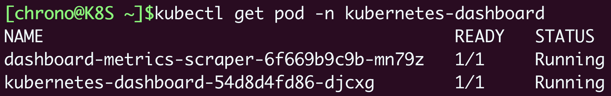
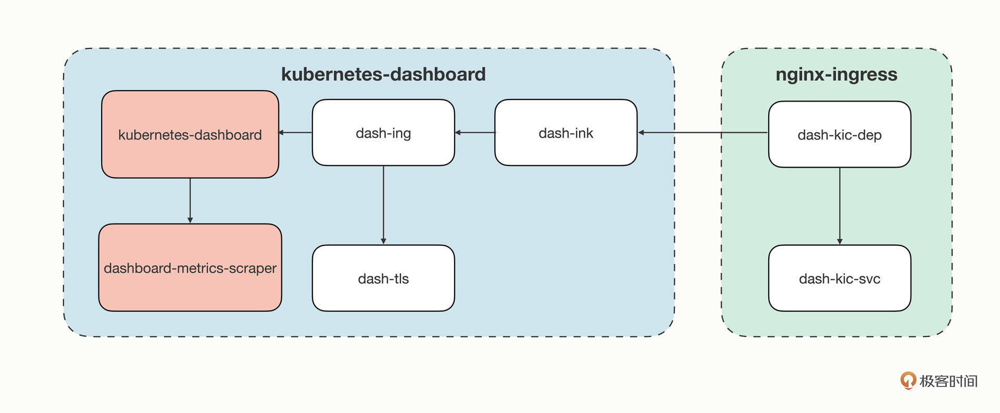

- 00 开篇词 迎难而上，做云原生时代的弄潮儿.md.html
- 00 课前准备 动手实践才是最好的学习方式.md.html
- 01 初识容器：万事开头难.md.html
- 02 被隔离的进程：一起来看看容器的本质.md.html
- 03 容器化的应用：会了这些你就是Docker高手.md.html
- 04 创建容器镜像：如何编写正确、高效的Dockerfile.md.html
- 05 镜像仓库：该怎样用好Docker Hub这个宝藏.md.html
- 06 打破次元壁：容器该如何与外界互联互通.md.html
- 07 实战演练：玩转Docker.md.html
- 08 视频：入门篇实操总结.md.html
- 09 走近云原生：如何在本机搭建小巧完备的Kubernetes环境.md.html
- 10 自动化的运维管理：探究Kubernetes工作机制的奥秘.md.html
- 11 YAML：Kubernetes世界里的通用语.md.html
- 12 Pod：如何理解这个Kubernetes里最核心的概念？.md.html
- 13 Job_CronJob：为什么不直接用Pod来处理业务？.md.html
- 14 ConfigMap_Secret：怎样配置、定制我的应用.md.html
- 15 实战演练：玩转Kubernetes（1）.md.html
- 16 视频：初级篇实操总结.md.html
- 17 更真实的云原生：实际搭建多节点的Kubernetes集群.md.html
- 18 Deployment：让应用永不宕机.md.html
- 19 Daemonset：忠实可靠的看门狗.md.html
- 20 Service：微服务架构的应对之道.md.html
- 21 Ingress：集群进出流量的总管.md.html
- 22 实战演练：玩转Kubernetes（2）.md.html
- 23 视频：中级篇实操总结.md.html
- 24 PersistentVolume：怎么解决数据持久化的难题？.md.html
- 25 PersistentVolume + NFS：怎么使用网络共享存储？.md.html
- 26 StatefulSet：怎么管理有状态的应用？.md.html
- 27 滚动更新：如何做到平滑的应用升级降级？.md.html
- 28 应用保障：如何让Pod运行得更健康？.md.html
- 29 集群管理：如何用名字空间分隔系统资源？.md.html
- 30 系统监控：如何使用Metrics Server和Prometheus？.md.html
- 31 网络通信：CNI是怎么回事？又是怎么工作的？.md.html
- 32 实战演练：玩转Kubernetes（3）.md.html
- 33 视频：高级篇实操总结.md.html
- 加餐 docker-compose：单机环境下的容器编排工具.md.html
- 加餐 谈谈Kong Ingress Controller.md.html
- 结束语 是终点，更是起点.md.html
- 捐赠
32 实战演练：玩转Kubernetes（3）
你好，我是Chrono。
到今天，我们的“高级篇”课程也要结束了。比起前面的“初级篇”“中级篇”来说，这里的知识点比较多，难度也要高一些。如果你能够一篇不漏地学习下来，相信一定对Kubernetes有更深层次的认识和理解。
今天的这节课还是来对前面的知识做回顾与总结，提炼出文章里的学习要点和重点，你也可以顺便检验一下自己的掌握程度，试试在不回看课程的情况下，自己能不能流畅说出关联的操作细节。
复习之后，我们就来进行最后一次实战演练了。首先会继续改进贯穿课程始终的WordPress网站，把MariaDB改成StatefulSet，加上NFS持久化存储；然后我们会在Kubernetes集群里安装Dashboard，综合实践Ingress、namespace的用法。
要点回顾一：API对象
“高级篇”可以分成三个部分，第一部分讲的是PersistentVolume、StatefulSet等API对象。
（[24讲]）PersistentVolume简称PV，是Kubernetes对持久化存储的抽象，代表了LocalDisk、NFS、Ceph等存储设备，和CPU、内存一样，属于集群的公共资源。
因为不同存储设备之间的差异很大，为了更好地描述PV特征，就出现了StorageClass，它的作用是分类存储设备，让我们更容易去选择PV对象。
PV一般由系统管理员来创建，我们如果要使用PV就要用PVC（PersistentVolumeClaim）去申请，说清楚需求的容量、访问模式等参数，然后Kubernetes就会查找最合适的PV分配给我们使用。
（[25讲]）手动创建PV的工作量很大，麻烦而且容易出错，所以就有了“动态存储卷”的概念，需要在StorageClass里绑定一个Provisioner对象，由它来代替人工，根据PVC自动创建出符合要求的PV。
有了PV和PVC，我们就可以在Pod里用“persistentVolumeClaim”来引用PVC，创建出可供容器使用的Volume，然后在容器里用“volumeMounts”把它挂载到某个路径上，这样容器就可以读写PV，实现数据的持久化存储了。
（[26讲]）持久化存储的一个重要应用领域就是保存应用的状态数据，管理有状态的应用，就要使用新的对象StatefulSet，可以认为它是管理无状态应用对象Deployment的一个特例。
StatefulSet对象的YAML描述和Deployment非常像，“spec”里只是多了一个“serviceName”字段，但它部署应用的方式却与Deployment差距很大。
Deployment创建的Pod是随机的名字，而StatefulSet会对Pod顺序编号、顺序创建，保证应用有一个确定的启动先后次序，这样就可以实现主从、主备等关系。
在使用Service为StatefulSet创建服务的时候，它也会为每个Pod单独创建域名，同样也是顺序编号，保证Pod有稳定的网络标识，外部用户就可以用这个域名来准确地访问到某个具体的Pod。
StatefulSet还使用“volumeClaimTemplates”字段来定义持久化存储，里面其实就是一个PVC，每个Pod可以用这个模板来生成自己的PVC去申请PV，实现存储卷与Pod的独立绑定。
通过启动顺序、稳定域名和存储模板这三个关键能力，StatefulSet就可以很好地处理Redis、MySQL等有状态应用了。
要点回顾二：应用管理
“高级篇”第二部分讲的是应用管理，包括滚动更新、资源配额和健康检查等内容。
（[27讲]）在Kubernetes里部署好应用后，我们还需要对它做持续的运维管理，其中一项任务是版本的更新和回退。
版本更新很简单，只要编写一个新的YAML（Deployment、DaemonSet、StatefulSet），再用 kubectl apply 应用就可以了。Kubernetes采用的是“滚动更新”策略，实际上是两个同步进行的“扩容”和“缩容”动作，这样在更新的过程中始终会有Pod处于可用状态，能够平稳地对外提供服务。
应用的更新历史可以用命令 kubectl rollout history 查看，如果有什么意外，就可以用 kubectl rollout undo 来回退。这两个命令相当于给我们的更新流程上了一个保险，可以放心大胆操作，失败就用“S/L大法”。
（[28讲]）为了让Pod里的容器能够稳定运行，我们可以采用资源配额和检查探针这两种手段。
资源配额能够限制容器申请的CPU和内存数量，不至于过多或者过少，保持在一个合理的程度，更有利于Kubernetes调度。
检查探针是Kubernetes内置的应用监控工具，有Startup、Liveness、Readiness三种，分别探测启动、存活、就绪状态，探测的方式也有exec、tcpSocket、httpGet三种。组合运用这些就可以灵活地检查容器的状态，Kubernetes发现不可用就会重启容器，让应用在总体上处于健康水平。
要点回顾三：集群管理
“高级篇”第三部分讲的是集群管理，有名字空间、系统监控和网络通信等知识点。
（[29讲]）Kubernetes的集群里虽然有很多计算资源，但毕竟是有限的，除了要给Pod加上资源配额，我们也要为集群加上资源配额，方法就是用名字空间，把整体的资源池切分成多个小块，按需分配给不同的用户使用。
名字空间的资源配额使用的是“ResourceQuota”，除了基本的CPU和内存，它还能够限制存储容量和各种API对象的数量，这样就可以避免多用户互相挤占，更高效地利用集群资源。
（[30讲]）系统监控是集群管理的另一个重要方面，Kubernetes提供了Metrics Server和Prometheus两个工具：
- Metrics Server专门用来收集Kubernetes核心资源指标，可以用
kubectl top来查看集群的状态，它也是水平自动伸缩对象HorizontalPodAutoscaler的前提条件。 - Prometheus，继Kubernetes之后的第二个CNCF毕业项目，是云原生监控领域的“事实标准”，在集群里部署之后就可以用Grafana可视化监控各种指标，还可以集成自动报警等功能。
（[31讲]）对于底层的基础网络设施，Kubernetes定义了平坦的网络模型“IP-per-pod”，实现它就要符合CNI标准。常用的网络插件有Flannel、Calico、Cilium等，Flannel使用Overlay模式，性能较低，Calico使用Route模式，性能较高。
现在，“高级篇”的众多知识要点我们都完整地过了一遍，你是否已经都理解、掌握了它们呢？
搭建WordPress网站
接下来我们就来在[第22讲]的基础上继续优化WordPress网站，其中的关键是让数据库MariaDB实现数据持久化。
网站的整体架构图变化不大，前面的Nginx、WordPress还是原样，只需要修改MariaDB：

因为MariaDB由Deployment改成了StatefulSet，所以我们要修改YAML，添加“serviceName”“volumeClaimTemplates”这两个字段，定义网络标识和NFS动态存储卷，然后在容器部分用“volumeMounts”挂载到容器里的数据目录“/var/lib/mysql”。
修改后的YAML就是这个样子：
apiVersion: apps/v1
kind: StatefulSet
metadata:
labels:
app: maria-sts
name: maria-sts
spec:
# headless svc
serviceName: maria-svc
# pvc
volumeClaimTemplates:
- metadata:
name: maria-100m-pvc
spec:
storageClassName: nfs-client
accessModes:
- ReadWriteMany
resources:
requests:
storage: 100Mi
replicas: 1
selector:
matchLabels:
app: maria-sts
template:
metadata:
labels:
app: maria-sts
spec:
containers:
- image: mariadb:10
name: mariadb
imagePullPolicy: IfNotPresent
ports:
- containerPort: 3306
envFrom:
- prefix: 'MARIADB_'
configMapRef:
name: maria-cm
volumeMounts:
- name: maria-100m-pvc
mountPath: /var/lib/mysql
改完MariaDB，我们还要再对WordPress做一点小修改。
还记得吗？StatefulSet管理的每个Pod都有自己的域名，所以要把WordPress的环境变量改成MariaDB的新名字，也就是“maria-sts-0.maria-svc”：
apiVersion: v1
kind: ConfigMap
metadata:
name: wp-cm
data:
HOST: 'maria-sts-0.maria-svc' #注意这里
USER: 'wp'
PASSWORD: '123'
NAME: 'db'
改完这两个YAML，我们就可以逐个创建MariaDB、WordPress、Ingress等对象了。
和之前一样，访问NodePort的“30088”端口，或者是用Ingress Controller的“wp.test”域名，都可以进入WordPress网站：

StatefulSet的持久化存储是否生效了呢？
你可以把这些对象都删除后重新创建，再进入网站，看看是否原来的数据依然存在。或者更简单一点，直接查看NFS的存储目录，应该可以看到MariaDB生成的一些数据库文件：

这两种方式都能够证明，我们的MariaDB使用StatefulSet部署后数据已经保存在了磁盘上，不会因为对象的销毁而丢失。
到这里，第一个小实践你就已经完成了，给自己鼓鼓劲，我们一起来做第二个实践，在Kubernetes集群里安装Dashboard。
部署Dashboard
在“初级篇”的实战演练课里（[第15讲]），我简单介绍了Kubernetes的图形管理界面，也就是Dashboard，不知道你是否还有印象。当时Dashboard是直接内置在minikube里的，不需要安装，一个命令启动，就能在浏览器里直观地管理Kubernetes集群了，非常方便。
那现在我们用kubeadm部署了实际的多节点集群，能否也用上Dashboard呢？接下来我就带你来一起动手，从零开始安装Dashboard。
首先，你应该先去Dashboard的项目网站（https://github.com/kubernetes/dashboard），看一下它的说明文档，了解一下它的基本情况。
它的安装很简单，只需要一个YAML文件，可以直接下载：
wget https://raw.githubusercontent.com/kubernetes/dashboard/v2.6.0/aio/deploy/recommended.yaml
这个YAML里包含了很多对象，虽然文件比较大，但现在的你应该基本都能够看懂了，要点有这么几个：
- 所有的对象都属于“kubernetes-dashboard”名字空间。
- Dashboard使用Deployment部署了一个实例，端口号是8443。
- 容器启用了Liveness探针，使用HTTPS方式检查存活状态。
- Service对象使用的是443端口，它映射了Dashboard的8443端口。
使用命令 kubectl apply 就可以轻松部署Dashboard了：
kubectl apply -f dashboard.yaml

部署Ingress/Ingress Controller
不过，为了给我们的实战增加一点难度，我们可以在前面配一个Ingress入口，用反向代理的方式来访问它。
由于Dashboard默认使用的是加密的HTTPS协议，拒绝明文HTTP访问，所以我们要先生成证书，让Ingress也走HTTPS协议。
简单起见，我直接用Linux里的命令行工具“openssl”来生成一个自签名的证书（如果你有条件，也可以考虑找CA网站申请免费证书）：
openssl req -x509 -days 365 -out k8s.test.crt -keyout k8s.test.key \
-newkey rsa:2048 -nodes -sha256 \
-subj '/CN=k8s.test' -extensions EXT -config <( \
printf "[dn]\nCN=k8s.test\n[req]\ndistinguished_name = dn\n[EXT]\nsubjectAltName=DNS:k8s.test\nkeyUsage=digitalSignature\nextendedKeyUsage=serverAuth")
openssl的命令比较长，我简单解释一下：它生成的是一个X509格式的证书，有效期365天，私钥是RSA2048位，摘要算法是SHA256，签发的网站是“k8s.test”。
运行命令行后会生成两个文件，一个是证书“k8s.test.crt”，另一个是私钥“k8s.test.key”，我们需要把这两个文件存入Kubernetes里供Ingress使用。
因为这两个文件属于机密信息，存储的方式当然就是用Secret了。你仍然可以用命令 kubectl create secret 来自动创建YAML，不过类型不是“generic”，而是“tls”，同时还要用 -n 指定名字空间，用 --cert、--key 指定文件：
export out="--dry-run=client -o yaml"
kubectl create secret tls dash-tls -n kubernetes-dashboard --cert=k8s.test.crt --key=k8s.test.key $out > cert.yml
出来的YAML大概是这个样子：
apiVersion: v1
kind: Secret
metadata:
name: dash-tls
namespace: kubernetes-dashboard
type: kubernetes.io/tls
data:
tls.crt: LS0tLS1CRUdJTiBDRVJU...
tls.key: LS0tLS1CRUdJTiBQUklW...
创建这个Secret对象之后，你可以再用 kubectl describe 来检查它的状态：
接下来我们就来编写Ingress Class和Ingress对象，为了保持名字空间的整齐，也把它放在“kubernetes-dashboard”名字空间里。
Ingress Class对象很简单，名字是“dash-ink”，指定Controller还是我们之前用的Nginx官方的Ingress Controller：
apiVersion: networking.k8s.io/v1
kind: IngressClass
metadata:
name: dash-ink
namespace: kubernetes-dashboard
spec:
controller: nginx.org/ingress-controller
Ingress对象可以用 kubectl create 命令自动生成，如果你有点忘记的话，可以回头参考一下[第21讲]：
kubectl create ing dash-ing --rule="k8s.test/=kubernetes-dashboard:443" --class=dash-ink -n kubernetes-dashboard $out
但这次因为是HTTPS协议，所以我们要在Ingress里多加一点东西，一个是“annotations”字段，指定后端目标是HTTPS服务，另一个是“tls”字段，指定域名和证书，也就是刚才创建的Secret：
apiVersion: networking.k8s.io/v1
kind: Ingress
metadata:
name: dash-ing
namespace: kubernetes-dashboard
annotations:
nginx.org/ssl-services: "kubernetes-dashboard"
spec:
ingressClassName: dash-ink
tls:
- hosts:
- k8s.test
secretName: dash-tls
rules:
- host: k8s.test
http:
paths:
- path: /
pathType: Prefix
backend:
service:
name: kubernetes-dashboard
port:
number: 443
最后一个对象，就是Ingress Controller了，还是拿现成的模板修改，记得要把“args”里的Ingress Class改成我们自己的“dash-ink”：
apiVersion: apps/v1
kind: Deployment
metadata:
name: dash-kic-dep
namespace: nginx-ingress
spec:
...
args:
- -ingress-class=dash-ink
要让我们在外面能够访问Ingress Controller，还要为它再定义一个Service，类型是“NodePort”，端口指定是“30443”：
apiVersion: v1
kind: Service
metadata:
name: dash-kic-svc
namespace: nginx-ingress
spec:
ports:
- port: 443
protocol: TCP
targetPort: 443
nodePort: 30443
selector:
app: dash-kic-dep
type: NodePort
把上面的Secret、Ingress Class、Ingress、Ingress Controller、Service都创建好之后，我们再来确认一下它们的运行状态：
因为这些对象比较多，处于不同的名字空间，关联有点复杂，我画了一个简单的示意图，你可以看一下：

访问Dashboard
到这里，Dashboard的部署工作就基本完成了。为了能正常访问，我们还要为它创建一个用户，才能登录进Dashboard。
Dashboard的网站上有一个简单示例（https://github.com/kubernetes/dashboard/blob/master/docs/user/access-control/creating-sample-user.md.html），我们直接拿来用就行：
apiVersion: v1
kind: ServiceAccount
metadata:
name: admin-user
namespace: kubernetes-dashboard
---
apiVersion: rbac.authorization.k8s.io/v1
kind: ClusterRoleBinding
metadata:
name: admin-user
roleRef:
apiGroup: rbac.authorization.k8s.io
kind: ClusterRole
name: cluster-admin
subjects:
- kind: ServiceAccount
name: admin-user
namespace: kubernetes-dashboard
这个YAML创建了一个Dashboard的管理员账号，名字叫“admin-user”，使用的是Kubernetes的RBAC机制，就不展开细讲了。
这个账号不能用简单的“用户名+密码”的方式登录，需要用到一个Token，可以用 kubectl get secret、kubectl describe secret 查到：
kubectl get secret -n kubernetes-dashboard
kubectl describe secrets -n kubernetes-dashboard admin-user-token-xxxx

Token是一个很长的字符串，把它拷贝存好，再为它的测试域名“k8s.test”加上域名解析（修改/etc/hosts），然后我们就可以在浏览器里输入网址“https://k8s.test:30443”访问Dashboard了：

下面的两张截图就是我查看集群里“kube-system”名字空间的情况，由于我们之前安装了Metrics Server，所以Dashboard也能够以图形的方式显示CPU和内存状态，有那么一点Prometheus + Grafana的意思：

小结
好了，今天我们一起回顾了“高级篇”里的要点，下面的这张思维导图就是对这些知识点的全面总结，你可以再认真研究一下：

今天我们有两个实战项目。首先是WordPress，把后端的存储服务MariaDB改造成了StatefulSet，挂载了NFS网盘，这样就实现了一个功能比较完善的网站，达到了基本可用的程度。
接着我们又在Kubernetes里安装了Dashboard，主要部署在名字空间“kubernetes-dashboard”。Dashboard自身的安装很简单，但我们又为它在前面搭建了一个反向代理，配上了安全证书，进一步实践了Ingress的用法。
不过这两个项目还没有完全覆盖“高级篇”的内容，你可以再接着改进它们，比如加上健康检查、资源配额、自动水平伸缩等，多动手来巩固所学的知识。
课下作业
今天的课下作业时间，我想就留给你自己来操作一下这节课里的两个实战演练吧，如果遇到了什么问题，可以在留言区随时提问。

© 2019 - 2023 Liangliang Lee. Powered by gin and hexo-theme-book.